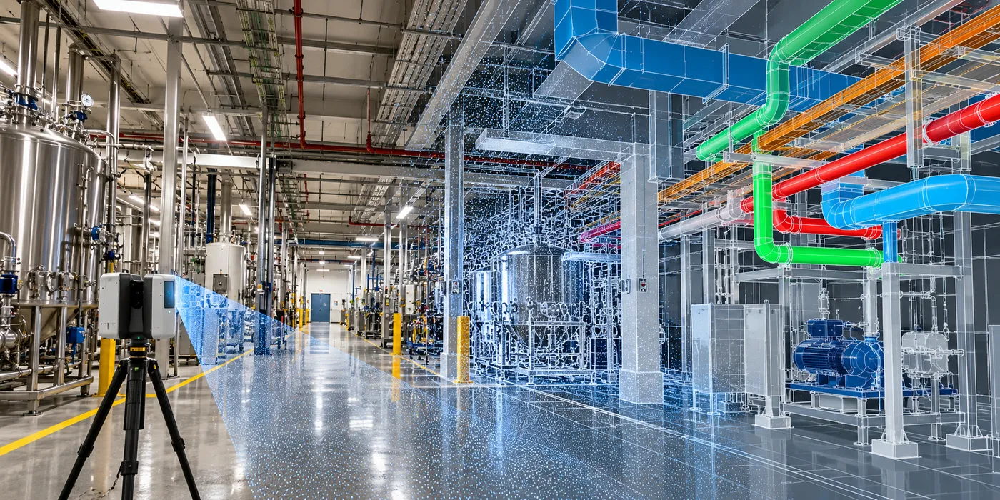

The Assignment
A pharmaceutical manufacturing plant in North Carolina was undergoing an expansion and retrofit to improve plant operations.
The existing electrical and mechanical infrastructure needed to be integrated with newly designed systems. Accurate information on existing conditions was therefore critical to ensure that new electrical, plumbing and HVAC systems could be designed and routed without conflicting with infrastructure already in place.
The assignment involved capturing the existing facility and creating an accurate digital model that could support the redesign and expansion.
Our Approach
CS TECH Ai used terrestrial laser scanning and Scan-to-BIM workflows to digitally capture the existing plant and create an accurate representation of its current infrastructure.
The engagement included:
- Terrestrial laser scanning of the existing manufacturing facility
- Creation and processing of point-cloud data from the captured environment
- Conversion of the point cloud into a detailed Revit model
- Digital representation of existing electrical and mechanical infrastructure
- Integration of existing conditions with proposed plant modifications
- Support for routing of new electrical systems within the existing facility
- Coordination of electrical, plumbing and HVAC requirements
- Virtual testing of proposed designs before implementation
- Provision of accurate measurements and dimensions for engineering and construction teams
- Creation of digital information that could subsequently support facility asset records
The resulting model provided designers, engineers and contractors with a common representation of existing conditions, allowing proposed systems to be evaluated against the plant's actual infrastructure before installation.